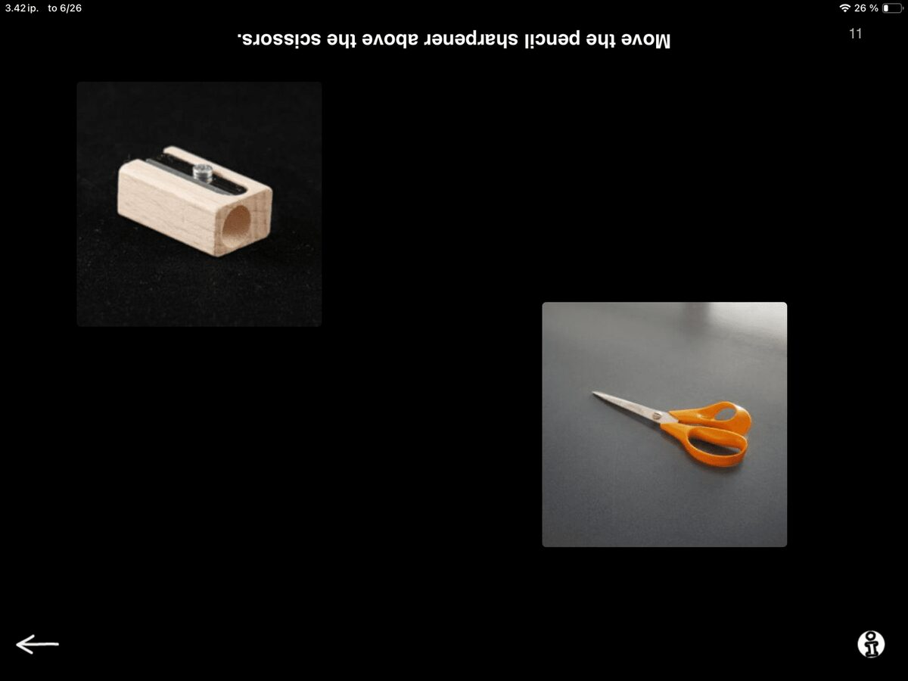
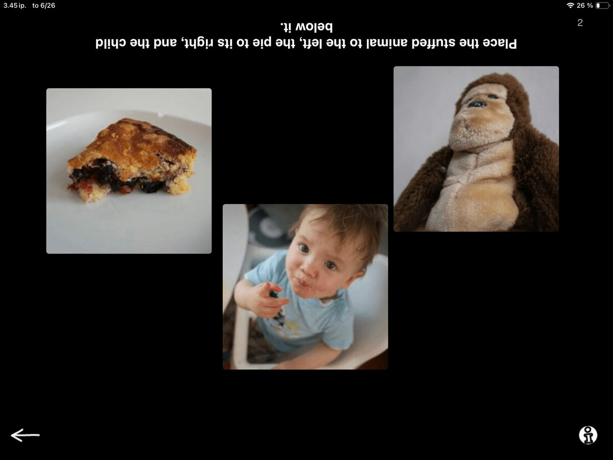

The second exercise in the refreshed Comprehension category is Follow Instructions.
With more image variety and expanded content, this task now includes 30 unique prompts on Level 1 and 35 refreshed prompts on Level 2.
When you open the exercise you see images and a short instruction, but the text is upside down. Interesting… but why is it upside down?
Imagine a typical in-person therapy session. Where is your patient seated? Most likely across the table from you. When you place the iPad on the table, your patient gets a clear view of the images, while you can easily read the prompt from your side. When you read a prompt that says: “Move the pencil sharpener above the scissors,” the patient can focus on listening and simply drag the images to follow your instruction. It’s simple and surprisingly rich for working on focused listening, spatial terms, and attention.
On level 1 you see two images and the instruction:

Level 1
Level 2 builds on this by showing three images and offering more complex instructions. For instance, you might get a scene with a stuffed animal, a slice of pie, and a child eating berries. Now you ask your patient: “Place the stuffed animal to the left, the pie to its right, and the child below it.” The added complexity challenges auditory memory and sequencing, especially since the visual layout doesn’t offer any clues about where things should go.

Level 2
Designed for therapist-guided interaction
If you are familiar with SanapsisPro, you know one of its key strengths is flexibility. There’s no automated feedback restricting the answers or limiting how the exercises are used. The open-ended structure gives you full control of the tasks and materials.
In Follow Instructions, this means you, the clinician, can adapt the task and materials to support your patient’s needs. You might repeat the instruction for someone who struggles to retain it after one hearing. You can also choose to break the instruction down step by step, then repeat the full phrase at the end to verify the result. You can even ask the patient to take notes or sketch the task plan before carrying it out. It’s all about using your clinical judgment to meet your patient’s needs in the moment.
Sometimes I like to flip the roles and ask the patient to read the instructions to me. This can be a great way to target reading comprehension. And they get to check whether you followed the instructions correctly. You might be surprised how hard you have to focus on listening to get it right!
Settings
As with most exercises in Sanapsis, Follow Instructions can be modified through the settings. In settings, you’ll find a toggle between Comprehension and Reading mode. This allows you to switch from upside-down text to standard orientation at the bottom of the screen. Now the task can be used for independent reading. Or better yet, you can take a seat side by side and follow the text together to get started. When you're ready to focus on auditory input again, just switch back to Comprehension mode. It’s a small feature, but it opens up a lot of flexibility.
Follow Instructions is a great task for supporting listening and comprehension skills while also challenging auditory memory and executive function. It adapts easily to your clinical style and to your patient’s individual strengths and goals.